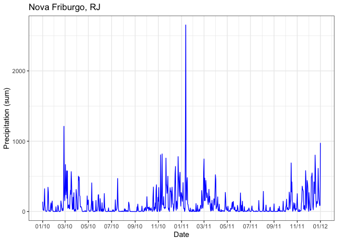

This R package retrieves zonal statistics from weather indicators that were calculated for each municipality in Brazil using data from the BR-DWGD and TerraClimate projects.
Zonal statistics such as mean, maximum, minimum, standard deviation, and sum were computed by taking into account the data cells that intersect the boundaries of each municipality and stored in Parquet files. This procedure was carried out for all Brazilian municipalities, and for all available dates, for every indicator available in the weather products (BR-DWGD and TerraClimate projects). This package queries on-line the already calculated statistics on the Parquet files and returns easy-to-use data.frames.
Details about the used methodology to calculate the zonal statistics are available at Articles > Methodology.
Installation
Stable version
install.packages("brclimr")Development version
remotes::install_github(repo = "rfsaldanha/brclimr")Example
To fetch data for a specific product, indicator and statistic, use the fetch_data function. For example: Rio de Janeiro, RJ (IBGE code number 3304557), data product “brdwgd”, average relative humidity, from 2010-10-15 to 2010-10-20.
library(brclimr)
fetch_data(
code_muni = 3304557,
product = "brdwgd",
indicator = "rh",
statistics = "mean",
date_start = as.Date("2010-10-15"),
date_end = as.Date("2010-10-20")
)
#> date value
#> 1 2010-10-15 74.48010
#> 2 2010-10-16 73.53403
#> 3 2010-10-17 77.84841
#> 4 2010-10-18 90.10590
#> 5 2010-10-19 74.33522
#> 6 2010-10-20 71.50061If you need to query several municipalities, indicators and zonal statistics, we recommend to download and locally query the parquet files using the arrow package. A list of URLs of the parquet files created for this project is available at Articles > Parquet files.
A list with the indicators and zonal statistics available by product can be retrieved with the function product_info.
product_info("brdwgd")
product_info("terraclimate")Another example
tmax <- fetch_data(
code_muni = 3303401,
product = "brdwgd",
indicator = "tmax",
statistics = "mean",
date_start = as.Date("2010-01-01"),
date_end = as.Date("2012-01-01")
)
tmin <- fetch_data(
code_muni = 3303401,
product = "brdwgd",
indicator = "tmin",
statistics = "mean",
date_start = as.Date("2010-01-01"),
date_end = as.Date("2012-01-01")
)
pr <- fetch_data(
code_muni = 3303401,
product = "brdwgd",
indicator = "pr",
statistics = "sum",
date_start = as.Date("2010-01-01"),
date_end = as.Date("2012-01-01")
)
tmax$name <- "Tmax_avg"
tmin$name <- "Tmin_avg"
library(ggplot2)
ggplot(data = rbind(tmax, tmin), aes(x = date, y = value, color = name)) +
geom_line() +
scale_x_date(date_breaks = "2 months", date_labels = "%m/%y") +
ylim(0, NA) +
labs(
title = "Nova Friburgo, RJ",
x = "Date",
y = "Temperature (average)",
color = ""
) +
theme_bw() +
theme(legend.position = "bottom", legend.direction = "horizontal")
ggplot(data = pr, aes(x = date, y = value)) +
geom_line(color = "blue") +
scale_x_date(date_breaks = "2 months", date_labels = "%m/%y") +
ylim(0, NA) +
labs(
title = "Nova Friburgo, RJ",
x = "Date",
y = "Precipitation (sum)",
color = ""
) +
theme_bw() +
theme(legend.position = "bottom", legend.direction = "horizontal")